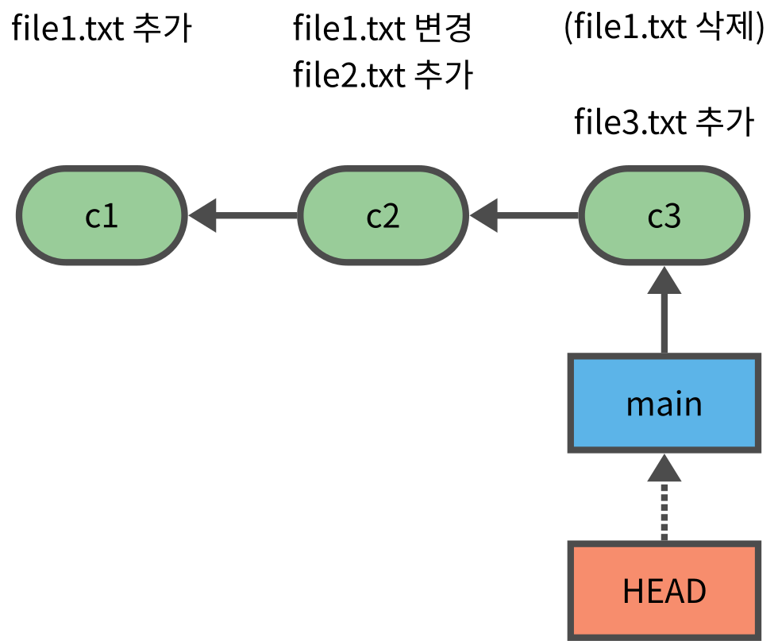

rm -rf test_checkout_01
git init test_checkout_01
cd test_checkout_01체크아웃
체크아웃
- 과거 커밋이 존재하는 경우, 필요에 따라 과거의 커밋 상태로 되돌아 가는 것이 가능하다
- 특정 커밋 시점으로 이동하는 것을 체크아웃이라고 한다.
체크아웃 명령
과거 커밋으로 체크아웃
git checkout <과거 커밋의 해시값>특정 브랜치의 최신 커밋으로 체크아웃
git checkout <브랜치 이름>
attached 상태와 detached 상태
| 헤드 상태 | 설명 | HEAD 파일의 내용 |
|---|---|---|
| attached 상태 | 헤드가 현재 브랜치의 가장 말단(최신) 커밋을 가리키고 있는 상태 | ref: refs/heads/<현재 브랜치 이름> |
| detached 상태 | 헤드가 브랜치의 과거 시점 커밋을 커밋을 가리키고 있는 상태 | 가리키는 커밋의 해시값 |
헤드 정보
- 헤드정보는
.git/HEAD텍스트 파일로 저장되어 관리된다. - attacehd 상태에서는 헤드(HEAD) 정보가 브랜치를 가리키지만
- detached 상태에서는 헤드(HEAD) 정보가 커밋 해시값을 가진다.
실습
- 저장소 생성
Initialized empty Git repository in /test_checkout_01/.git/
- 커밋 c1
- file1.txt 추가
echo "file1 line 1" >> file1.txt
git add .
git commit -m c1[main (root-commit) e5b1c6f] c1
1 file changed, 1 insertion(+)
create mode 100644 file1.txt- 커밋 c2
- file2.txt 추가
echo "file1 line 2" >> file1.txt
echo "file2 line 1" >> file2.txt
git add .
git commit -m c2[main 700fb5a] c2
2 files changed, 2 insertions(+)
create mode 100644 file2.txt- 커밋 c3
- file3.txt 추가
git rm file1.txt
mkdir sub
echo "file3 line 1" >> sub/file3.txt
git add .
git commit -m c3rm 'file1.txt'
[main 87bbcda] c3
2 files changed, 1 insertion(+), 2 deletions(-)
delete mode 100644 file1.txt
create mode 100644 sub/file3.txt- 현재 상태 확인
git logcommit 87bbcdaf15bea96b7e6e68406c8c354e94f78a48 (HEAD -> main)
Author: user <user@company.com>
Date: Sun Aug 17 10:35:41 2025 +0900
c3
commit 700fb5af146f567d22db5245b620b7ce9b944ccc
Author: user <user@company.com>
Date: Sun Aug 17 10:35:40 2025 +0900
c2
commit e5b1c6fec8d49633243aa03fc156c55084be00b7
Author: user <user@company.com>
Date: Sun Aug 17 10:35:40 2025 +0900
c1
| c1 | c2 | c3 |
|---|---|---|
| file1.txt | file1.txt | - |
| - | file2.txt | file2.txt |
| - | - | file3.txt |
- 현재 main 브랜치 (말단 커밋)
cat .git/HEADref: refs/heads/maintree.
├── file2.txt
└── sub
└── file3.txt
2 directories, 2 files- 바로 앞 커밋으로 체크아웃
git checkout HEAD~1Note: switching to 'HEAD~1'.
You are in 'detached HEAD' state. You can look around, make experimental
changes and commit them, and you can discard any commits you make in this
state without impacting any branches by switching back to a branch.
If you want to create a new branch to retain commits you create, you may
do so (now or later) by using -c with the switch command. Example:
git switch -c <new-branch-name>
Or undo this operation with:
git switch -
Turn off this advice by setting config variable advice.detachedHead to false
HEAD is now at 700fb5a c2- 현재 상태
git statusHEAD detached at 700fb5a
nothing to commit, working tree cleancat .git/HEAD700fb5af146f567d22db5245b620b7ce9b944ccc- 로그에는 c2까지만 출력
git logcommit 700fb5af146f567d22db5245b620b7ce9b944ccc (HEAD)
Author: user <user@company.com>
Date: Sun Aug 17 10:35:40 2025 +0900
c2
commit e5b1c6fec8d49633243aa03fc156c55084be00b7
Author: user <user@company.com>
Date: Sun Aug 17 10:35:40 2025 +0900
c1tree.
├── file1.txt
└── file2.txt
1 directory, 2 files- 더 앞으로 체크아웃
git checkout HEAD~1Previous HEAD position was 700fb5a c2
HEAD is now at e5b1c6f c1git statusHEAD detached at e5b1c6f
nothing to commit, working tree cleancat .git/HEADe5b1c6fec8d49633243aa03fc156c55084be00b7git logcommit e5b1c6fec8d49633243aa03fc156c55084be00b7 (HEAD)
Author: user <user@company.com>
Date: Sun Aug 17 10:35:40 2025 +0900
c1tree.
└── file1.txt
1 directory, 1 file- 도로 브랜치(말단 커밋)로 체크아웃
git checkout mainPrevious HEAD position was e5b1c6f c1
Switched to branch 'main'git statusOn branch main
nothing to commit, working tree cleancat .git/HEADref: refs/heads/maingit logcommit 87bbcdaf15bea96b7e6e68406c8c354e94f78a48 (HEAD -> main)
Author: user <user@company.com>
Date: Sun Aug 17 10:35:41 2025 +0900
c3
commit 700fb5af146f567d22db5245b620b7ce9b944ccc
Author: user <user@company.com>
Date: Sun Aug 17 10:35:40 2025 +0900
c2
commit e5b1c6fec8d49633243aa03fc156c55084be00b7
Author: user <user@company.com>
Date: Sun Aug 17 10:35:40 2025 +0900
c1체크아웃시의 파일 변화
- 체크아웃하면 출발지 커밋과 목적지 커밋에 해당 파일이 있는지 여부에 따라 파일에 발생하는 현상이 달라진다.
| 출발지 커밋 | 목적지 커밋 | 결과 |
|---|---|---|
| 커밋 | 커밋 | 목적지 커밋에 있는 내용으로 바뀐다. |
| 커밋 | - | 파일이 사라진다 |
| - | 커밋 | 출발시점의 워크트리에 같은 이름의 파일이 있으면 실패, 없으면 생긴다. |
| - | - | 그대로 유지된다. |
- file4.txt라는 untracked 파일을 만들고 c3 -> c2 로 체크아웃 하는 경우
| 파일 | 출발지 c3 | 목적지 c2 | 결과 |
|---|---|---|---|
| file2.txt | 커밋 | 커밋 | 목적지 커밋에 있는 내용으로 바뀐다. |
| file3.txt | 커밋 | - | 파일이 사라진다 |
| file1.txt | - | 커밋 | 출발시점의 워크트리에 같은 이름의 파일이 있으면 실패, 없으면 생긴다. |
| file4.txt | - | - | 그대로 유지된다. |
실습
git statusOn branch main
nothing to commit, working tree clean- untracked 파일 file4.txt 생성
touch file4.txttree.
├── file2.txt
├── file4.txt
└── sub
└── file3.txt
2 directories, 3 files- c2로 체크아웃
git checkout HEAD~1Note: switching to 'HEAD~1'.
You are in 'detached HEAD' state. You can look around, make experimental
changes and commit them, and you can discard any commits you make in this
state without impacting any branches by switching back to a branch.
If you want to create a new branch to retain commits you create, you may
do so (now or later) by using -c with the switch command. Example:
git switch -c <new-branch-name>
Or undo this operation with:
git switch -
Turn off this advice by setting config variable advice.detachedHead to false
HEAD is now at 700fb5a c2- c2, c3에 모두 있는 file2.txt는 그대로
- c2에만 있는 file1.txt 생김
- c3에만 있는 file3.txt 사라짐
- 모두 커밋되지 않은 file4.txt는 그대로
tree.
├── file1.txt
├── file2.txt
└── file4.txt
1 directory, 3 files체크아웃 실패
체크아웃도 브랜치 전환과 마찬가지로 워크트리의 파일 상태에 따라 불가능한 경우가 있다.
출발 시점에 워크트리에 있는 파일의 상태가 다음과 같으면 목적지 커밋으로 체크아웃 할 수 없다.
- 변경(modified), 삭제(deleted) 상태의 파일이 존재
- 목적지 커밋에 있는 파일과 같은 이름의 신규(untracked) 파일이 존재
즉 변경/삭제 상태의 파일이 존재하지 않아야 하고, 신규파일의 경우 목적지 커밋에 해당 이름의 파일이 없어야 한다.
이는 커밋을 전환하면서 현재 워크트리의 변경사항이 목적지 커밋의 내용으로 덮어씌워지는 것을 방지하기 위함이다.
변경 혹은 신규 파일의 내용이 목적지 커밋된 있는 파일과 같은 경우에도 상관없이 불가능하다.
다시 c3 커밋으로 복귀
git checkout mainPrevious HEAD position was 700fb5a c2
Switched to branch 'main'tree.
├── file2.txt
├── file4.txt
└── sub
└── file3.txt
2 directories, 3 files- file2.txt 를 변경하여 변경상태로 만들면
echo "file2 line 2" >> file2.txt
git statusOn branch main
Changes not staged for commit:
(use "git add <file>..." to update what will be committed)
(use "git restore <file>..." to discard changes in working directory)
modified: file2.txt
Untracked files:
(use "git add <file>..." to include in what will be committed)
file4.txt
no changes added to commit (use "git add" and/or "git commit -a")- 체크아웃 실패
git checkout HEAD~1 || trueM file2.txt
Note: switching to 'HEAD~1'.
You are in 'detached HEAD' state. You can look around, make experimental
changes and commit them, and you can discard any commits you make in this
state without impacting any branches by switching back to a branch.
If you want to create a new branch to retain commits you create, you may
do so (now or later) by using -c with the switch command. Example:
git switch -c <new-branch-name>
Or undo this operation with:
git switch -
Turn off this advice by setting config variable advice.detachedHead to false
HEAD is now at 700fb5a c2- file2.txt를 복구하고 다시 시도하면 성공
git restore file2.txt
git statusHEAD detached at 700fb5a
Untracked files:
(use "git add <file>..." to include in what will be committed)
file4.txt
nothing added to commit but untracked files present (use "git add" to track)git checkout HEAD~1Previous HEAD position was 700fb5a c2
HEAD is now at e5b1c6f c1- 다시 c3로 체크아웃 한 뒤
git checkout mainPrevious HEAD position was e5b1c6f c1
Switched to branch 'main'- c2에만 있는 file1.txt와 같은 이름의 untracked 파일 생성
touch file1.txt
tree.
├── file1.txt
├── file2.txt
├── file4.txt
└── sub
└── file3.txt
2 directories, 4 files- 체크아웃 실패
git checkout HEAD~1 || trueerror: The following untracked working tree files would be overwritten by checkout:
file1.txt
Please move or remove them before you switch branches.
Aborting- file1.txt 파일을 없애면 체크아웃 성공
rm -r file1.txt
git checkout HEAD~1Note: switching to 'HEAD~1'.
You are in 'detached HEAD' state. You can look around, make experimental
changes and commit them, and you can discard any commits you make in this
state without impacting any branches by switching back to a branch.
If you want to create a new branch to retain commits you create, you may
do so (now or later) by using -c with the switch command. Example:
git switch -c <new-branch-name>
Or undo this operation with:
git switch -
Turn off this advice by setting config variable advice.detachedHead to false
HEAD is now at 700fb5a c2참조 로그
- reflog